Xin chào! Are you ready to explore Vietnam? Vietnam is a vibrant country with so many delicious foods, colorful fruits, and beautiful scenery everywhere you look! Here, you’ll get a taste of everything that makes Vietnam so interesting, from lively cities to peaceful landscapes, and everything in between! Before you know it, you’ll be planning a trip yourself!
WEBSITE GUIDE
Don’t know where to start? Look no further! Whether you just want to learn about a few popular cities or want to pick your next food to try, we have you covered! Here’s what you will find on these pages:
-
Introduction & Major Cities
- On this page you’ll find the introduction, as well as information about four major cities in Vietnam! Get ready to plan your next trip!
-
Foods and Fruits
- The second page will dive into some popular foods (yes, there is more to the country than just pho) and fruits that are local to Vietnam! Which ones would you like to try?
-
Fun Facts and Other Information
- The third page will explore fun facts and various other interesting topics! Are you ready to expand your knowledge?
MAJOR CITIES IN VIETNAM
HO CHI MINH CITY (THÀNH PHỐ HỒ CHÍ MINH)
Ho Chi Minh City, formerly known as Saigon, is the largest city in Vietnam, with a population of more than 9,000,000 people! Known as the economic heart of Vietnam, this city is the main hub of the southern region. In this vibrant city, you’ll find yourself exploring landmarks, shopping districts, and street food vendors around every corner.
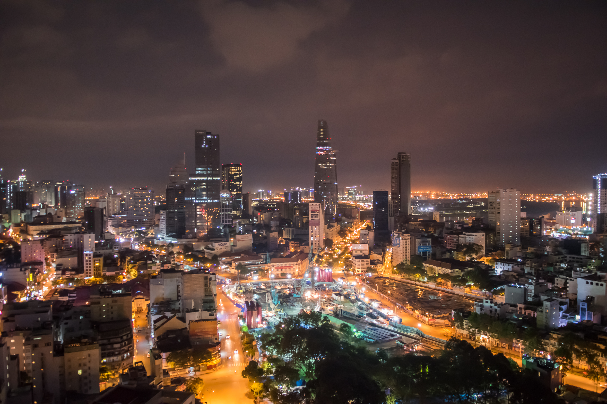
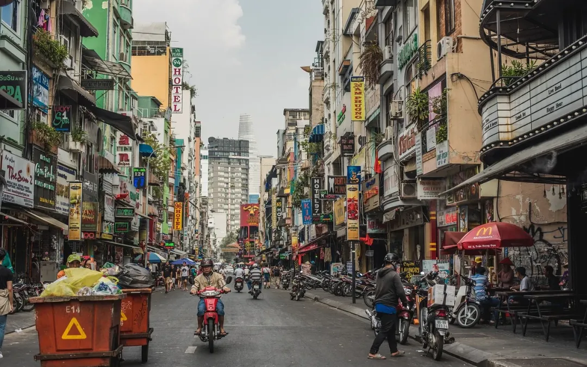
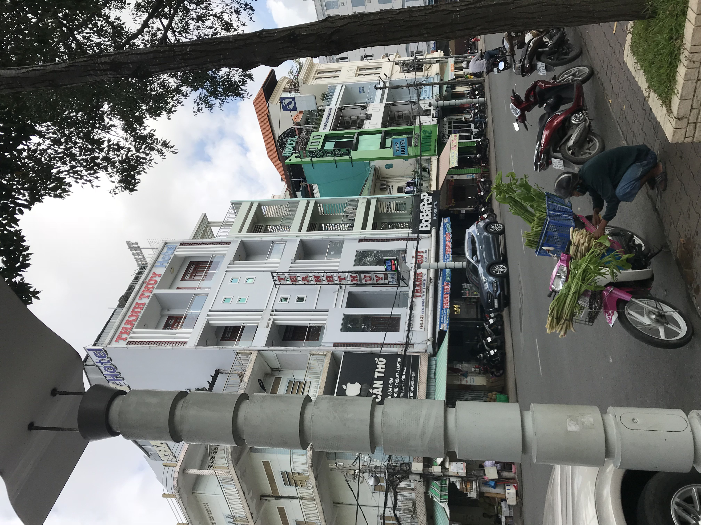
HANOI (HÀ NỘI)
Hanoi is the second largest city in Vietnam, and here you’ll find a more historic atmosphere than the modern Ho Chi Minh City. As the capital of Vietnam, Hanoi is known for its bustling street life and French colonial architecture. Like Ho Chi Minh City, there is a large shopping and street food scene.

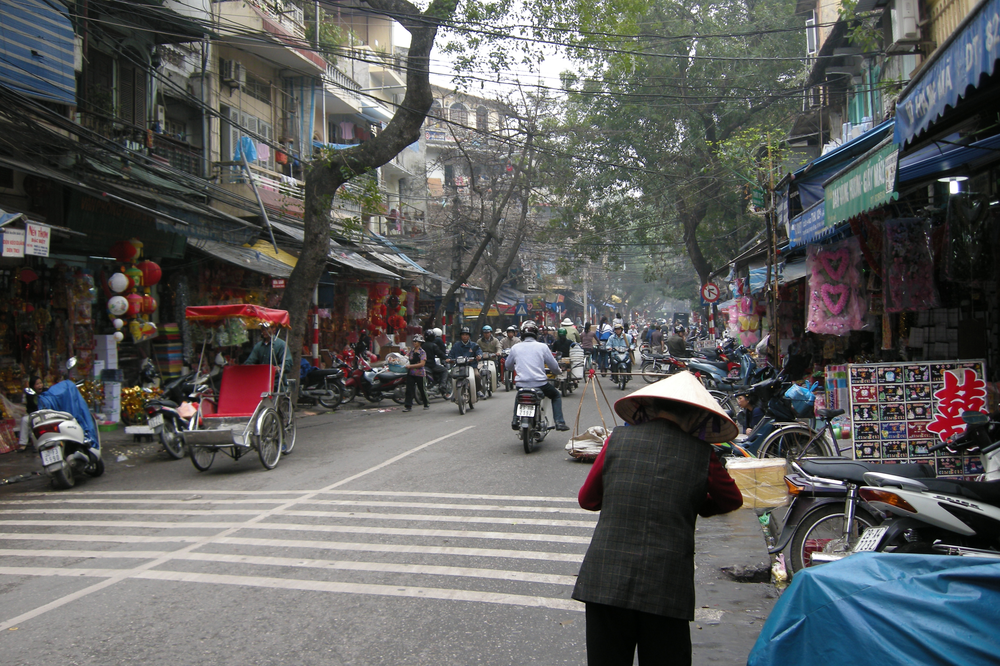
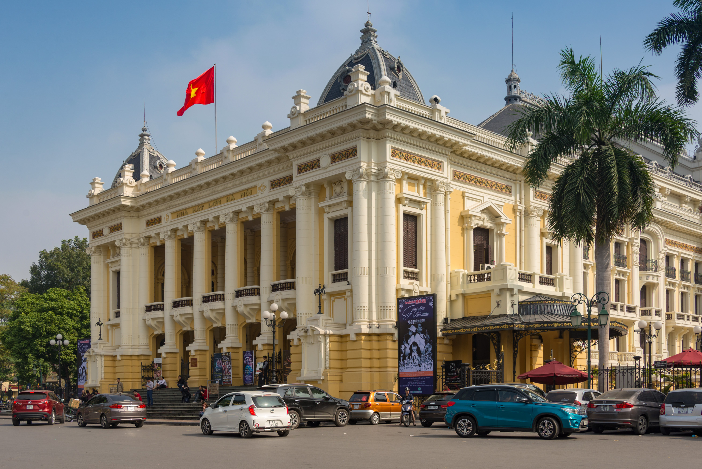
CAN THO (CẦN THƠ)
Can Tho is the fourth largest city in Vietnam. It is the largest city in the Mekong Delta region, where boats are the main form of transportation due to its many rivers and canals! Near Can Tho, you’ll find the Cai Rang Floating Market, an incredible experience where vendors and the local community sell their goods entirely from boats on the river!
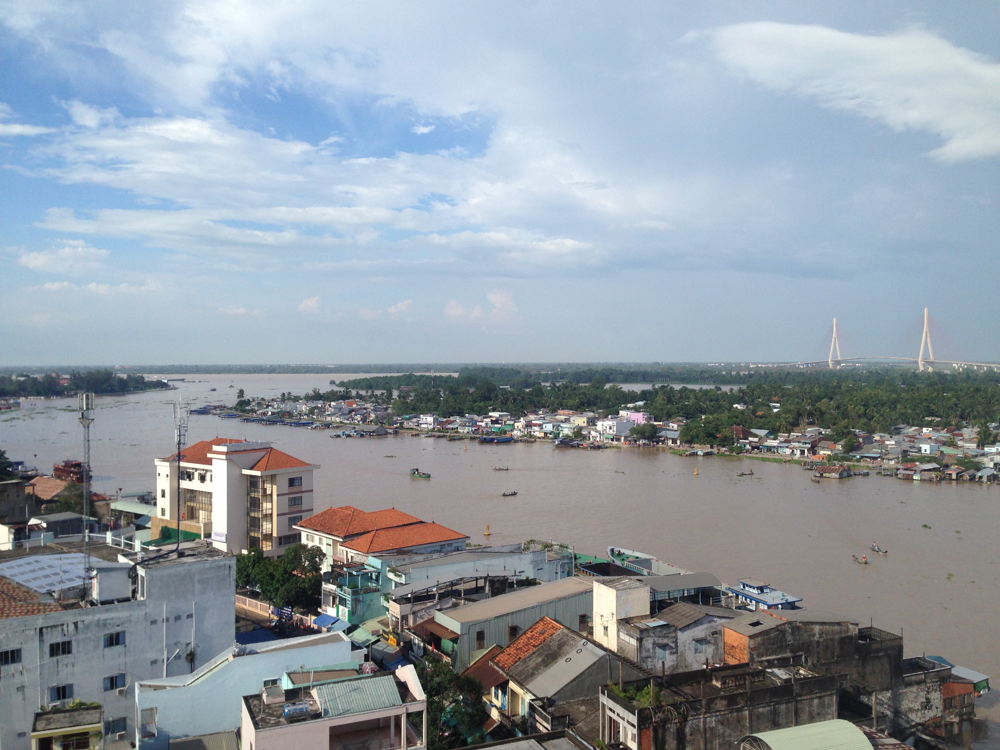
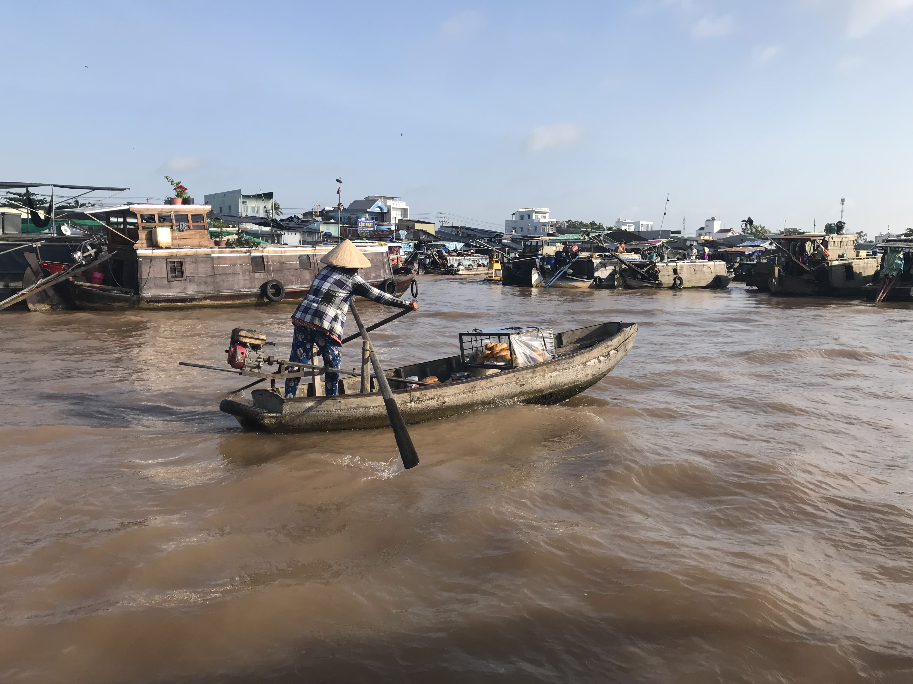
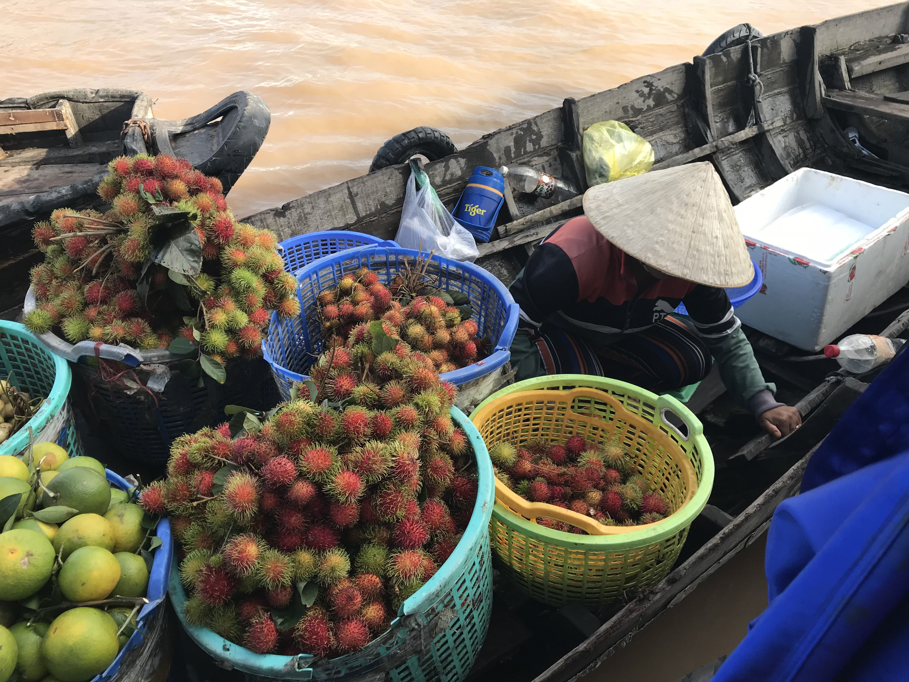
DA NANG (ĐÀ NẴNG)
Da Nang is the sixth largest city in Vietnam, and is known for its stunning beaches, beautiful landscapes, and overall relaxed atmosphere compared to the more bustling cities. Like the other cities, Da Nang offers a great street food scene, but also the opportunity to see the beautiful Marble Mountains!
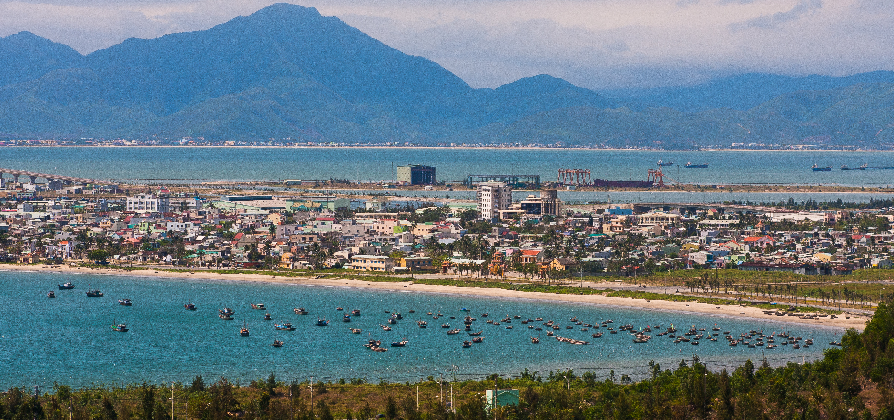
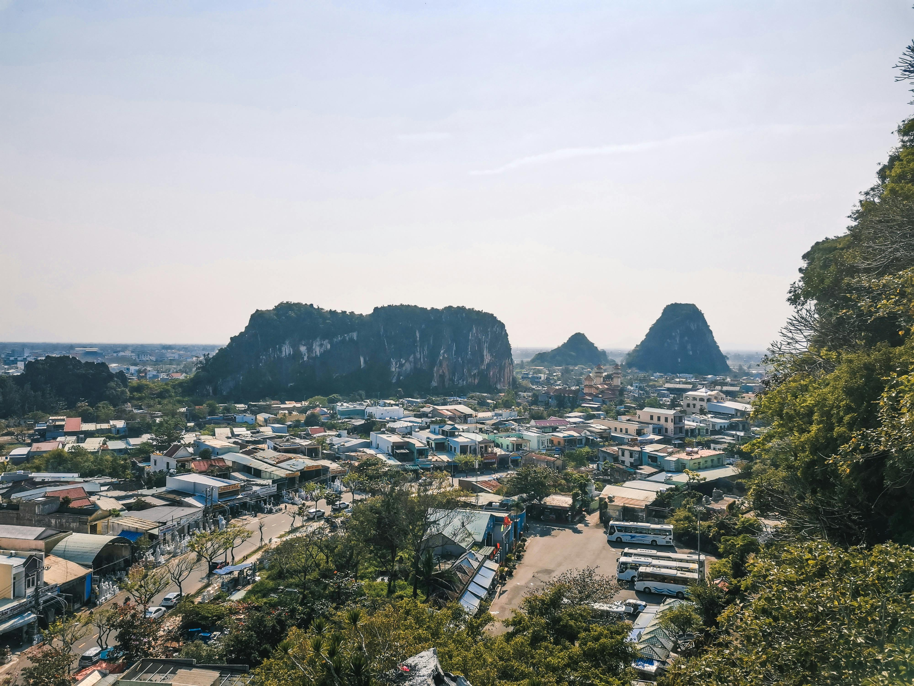
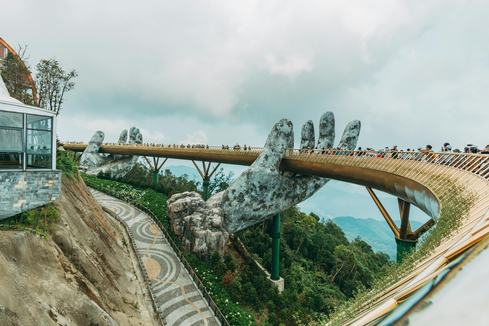